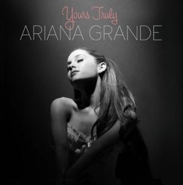
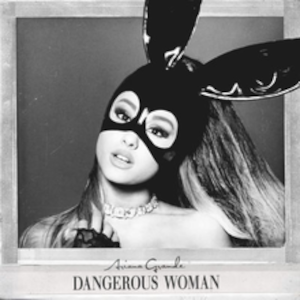
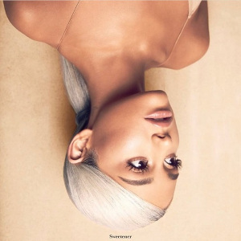
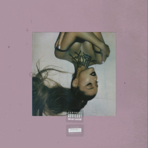

Ariana Grande Álbuns
Yours Truly
Yours Truly é o álbum de estreia da cantora e compositora estadunidense Ariana Grande, lançado em 3 de setembro de 2013[1] através da Republic Records. Inicialmente denominado Daydreamin', o disco foi desenvolvido desde meados de 2011, com a produção de Harmony Samuels, Babyface, entre outros. Foi influenciado por Whitney Houston, Amy Winehouse, Christina Aguilera e Mariah Carey, entre outros dos ídolos de Grande que descreve a primeira metade do álbum como um "retrocesso" para a música R & B dos anos 1990, e na segunda metade sendo "muito único e muito especial que eu tenho a sorte de escrita" e que é completamente original.
My Everything
My Everything é o segundo álbum de estúdio da cantora norte-americana Ariana Grande, lançado em 25 de agosto de 2014 através da gravadora Republic Records. Ariana descreve My Everything como "uma evolução", de seu álbum de estreia, Yours Truly (2013); pois explora temas e gêneros mais maduros. Após o seu lançamento, o álbum estreou no topo da Billboard 200, vendendo 169.000 cópias em sua primeira semana nos Estados Unidos. Ele estreou na primeira posição na Austrália e no Canadá, e também atingiu o TOP 10 de 20 países do mundo.
Dangerous Woman
Dangerous Woman é o terceiro álbum de estúdio da cantora norte-americana Ariana Grande. Foi lançado em 20 de maio de 2016 através da gravadora Republic Records. A canção de mesmo nome foi lançada como o primeiro single do álbum em 11 de março de 2016. O álbum recebeu críticas positivas, com nota 76 no site Metacritic. Foi eleito pela Billboard, MTV UK e Complex um dos melhores álbuns de 2016.[1] O álbum vendeu 271 mil cópias mundialmente na primeira semana e estreou na segunda posição da Billboard 200. Atualmente, o álbum acumula mais de 7 milhões de cópias vendidas no mundo todo, sendo um dos mais bem sucedidos comercialmente de 2016. O álbum recebeu 2 indicações ao Grammy Awards, na categoria Best Pop Vocal Album e Best Pop Vocal Performance.[2]
Sweetener
Sweetener (estilizado em letras minúsculas) é o quarto álbum de estúdio da cantora estadunidense Ariana Grande, lançado em 17 de agosto de 2018 através da Republic Records. As sessões de gravação e composição iniciaram-se em julho de 2016, meses após o lançamento de Dangerous Woman. Grande queria experimentar novas direções musicais e, para isso, contou com a ajuda do compositor e produtor Pharrell Williams, com quem primeiramente desenvolveu "Sweetener", que definiu a musicalidade e o tema do álbum, além de servir como seu título, uma mensagem de transformar uma situação ruim numa melhor. As gravações foram interrompidas com o atentado ocorrido em 22 de maio de 2017 durante um show da Dangerous Woman Tour em Manchester; no período de pausa da turnê, a artista sofreu ataques de pânico e ansiedade, o que acabou inspirando uma série de novas canções, boa parte delas desenvolvidas com a equipe do produtor sueco Max Martin, seu parceiro Ilya e o compositor Savan Kotecha, colaboradores de longa data da cantora.
Thank U, Next
Thank U, Next (estilizado como thank u, next) é o quinto álbum de estúdio da cantora estadunidense Ariana Grande. O seu lançamento ocorreu em 8 de fevereiro de 2019, através da Republic Records. Pouco após o lançamento de seu disco anterior Sweetener, recebido com aclamação crítica e sucesso comercial, Grande passou por problemas pessoais e considerou dar uma pausa em sua carreira, incentivada, principalmente, pela morte de seu ex-namorado, o rapper Mac Miller, em setembro de 2018. Entretanto, ela começou as sessões de gravação e composição de seu álbum seguinte pouco depois, contando com a colaboração de Victoria Monét e Tayla Parx na composição, e de Tommy Brown, Charles Anderson e Michael Foster na produção, todos amigos próximos — uma decisão vinda da própria cantora, e que ajudou-a a se recuperar e serviu como forma de terapia.
Positions

Positions é o sexto álbum de estúdio da cantora estadunidense Ariana Grande, lançado em 30 de outubro de 2020, através da Republic Records. Grande trabalhou com vários produtores no álbum, incluindo Tommy Brown, Anthony M. Jones, London on da Track, Murda Beatz, The Rascals, Scott Storch, Shea Taylor, Charles Anderson, Victoria Monét e Tayla Parx. Positions é um álbum midtempo de R&B, pop e trap que discute principalmente temas de sexo, e apresenta colaborações com Doja Cat, The Weeknd e Ty Dolla Sign, enquanto na versão deluxe conta com a colaboração de Megan Thee Stallion.